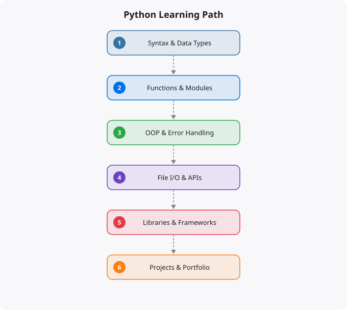

Python is the most important programming language to learn right now. Not because it is the only language, but because it is the entry point to data science, machine learning, automation, cloud scripting, and backend development. Every AI tool, every data pipeline, every modern automation framework has Python at its core. If you want to work in technology in the 2020s and beyond, Python fluency is not optional — it is the foundation everything else builds on.
This guide covers the complete journey from absolute beginner to professional-level Python usage. It is not a list of syntax rules. It is a roadmap for building genuine programming capability, with Python as the vehicle.
Python was not supposed to dominate. When Guido van Rossum created it in the late 1980s, C, Java, and Perl were the serious languages. Python was considered a scripting language — useful for small tasks, not serious work. That perception changed gradually, then suddenly. Python's readability meant that scientists and researchers — who needed to program but were not trained programmers — could use it without fighting the language. Libraries like NumPy and SciPy built scientific computing capability. The machine learning explosion brought TensorFlow and PyTorch, both Python-first. Cloud providers built Python SDKs. Django and Flask made Python viable for web development. By the 2010s, Python had become the common language of multiple technical communities that had previously used different tools.
Today, Python is the primary language of data science, machine learning, AI development, cloud automation, scientific computing, and a significant portion of web backend development. It is the language most commonly taught to beginners and the language most commonly used in production AI systems. For a career in technology, Python is the single most important language to learn.
The beginner phase is about building the mental model that underlies all programming. You are not just learning Python syntax — you are learning to think computationally. Start with variables and data types. Understand that every piece of data in a program has a type — integer, float, string, boolean — and that type determines what operations you can perform on it. Learn why type errors happen and how to read them. Move to control flow: if-elif-else for making decisions, for and while loops for repetition. These two concepts — conditional logic and iteration — are the building blocks of every algorithm you will ever write. Practice them extensively. Write functions. Functions are reusable units of logic with clear inputs and outputs. Learning to write good functions — small, focused, well-named — is the most important early programming skill. If your functions are long and do many things, you are not thinking like a programmer yet.
Handle errors with try-except. Python is explicit about errors, and learning to anticipate and handle them is an early professional habit. Work with lists, dictionaries, tuples, and sets — Python's core data structures. Know when to use each one. A dictionary is not just a fancier list; it is a fundamentally different tool for different problems.
Intermediate Python is where the language becomes practically useful. File handling — reading and writing text files, CSV files, JSON files — is essential for any real automation or data work. API consumption using the requests library: making HTTP requests, parsing JSON responses, handling authentication headers, and dealing with rate limits. This skill connects Python to the entire modern web API ecosystem. Virtual environments with venv or conda: understanding why you need isolated environments for different projects and how to manage dependencies properly. pip and requirements.txt for dependency management. Regular expressions for pattern matching and text processing — a powerful tool that many beginners avoid but professionals use constantly. Working with dates and times, which is more complex than it seems and trips up many developers. Object-oriented programming: classes, instances, inheritance, and when OOP makes your code clearer versus when it adds unnecessary complexity.
Advanced Python is about code quality, maintainability, and performance. Decorators and context managers: Python's powerful patterns for cross-cutting concerns like logging, timing, and resource management. Generators and iterators: lazy evaluation for memory-efficient processing of large datasets. Type hints with mypy: adding static typing to Python for better tooling support and earlier error detection. Testing with pytest: writing unit tests, integration tests, and test fixtures. Test-driven development principles. Profiling and optimization: using cProfile to identify bottlenecks, understanding Python's performance characteristics, and knowing when to use more efficient data structures or move to compiled extensions. Concurrency: threading versus multiprocessing versus asyncio, and which approach is right for which type of work. Project structure: organizing code into packages, understanding imports, building installable packages.
Once you have solid Python fundamentals, specialize based on your interests and goals. Data science track: NumPy for numerical computing, pandas for data manipulation, Matplotlib and Seaborn for visualization, Jupyter notebooks for exploration. Machine learning track: scikit-learn for classical ML, PyTorch or TensorFlow for deep learning, Hugging Face transformers for modern NLP. Web development track: Django for full-featured web applications with built-in ORM and admin, Flask for lightweight APIs, FastAPI for modern async REST APIs. Cloud and DevOps track: boto3 for AWS, google-cloud Python client libraries, Paramiko for SSH automation, Ansible for infrastructure automation. Each of these tracks builds on the same Python foundation you build in phases one through three.
The most effective way to learn Python is to build things that you actually want to exist. Not toy programs for their own sake — real utilities that solve problems you actually have. A script that automates something tedious in your daily work. A program that processes data you are already working with. A small web API for a project you care about. Real projects force you to confront real problems: how to structure code that others can understand, how to handle unexpected inputs, how to write code that works reliably over time rather than just once. Read code that experienced Python developers have written. The Python standard library itself is an excellent source of idiomatic Python. Open source projects on GitHub show how large Python codebases are organized. Understand the Pythonic way of doing things — list comprehensions, context managers, proper use of the standard library — by seeing them in real code rather than only in tutorials. Python rewards clarity over cleverness. The best Python code reads almost like prose. Write code that your future self will be able to understand six months from now, and you are on the path to professional Python.
← Back to BlogDisclaimer: This article is for educational purposes only. Python usage, performance, and security considerations vary by project and environment. Always test code in controlled environments before deploying to production systems.